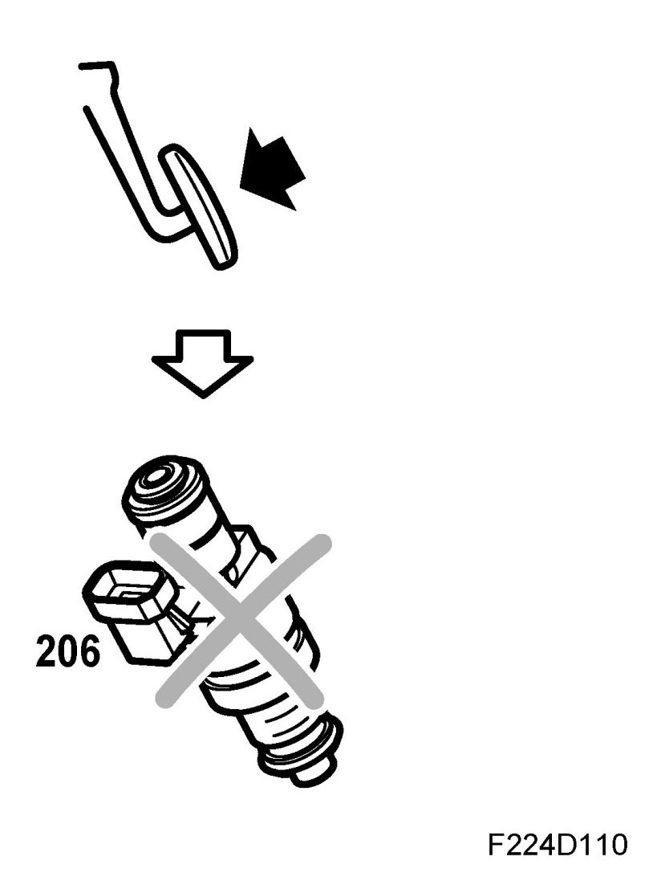

Starting Fuel
Starting Fuel
Starter motor cranking
As soon as the control module has localized the large gap in the slotted ring, injection will take place according to the crankshaft angle.
The fuel quantity is still controlled by the coolant temperature alone and gradually diminishes as starter motor cranking continues.
Injection ceases if the accelerator is pressed down fully. So if the engine is suspected of being flooded, it can be ventilated.

As soon as engine speed exceeds 500 rpm the engine is considered to have started and the quantity of fuel is calculated with the mass air flow sensor as the main sensor.